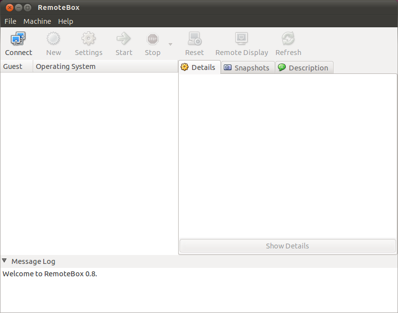
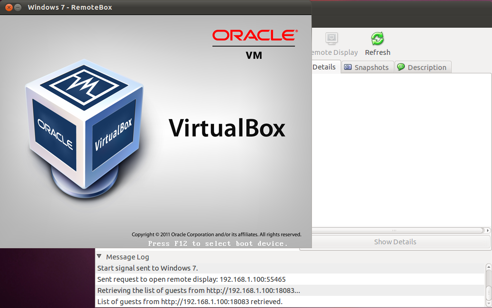
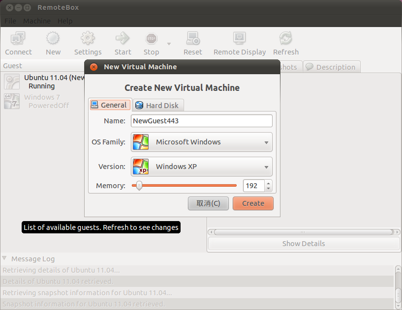
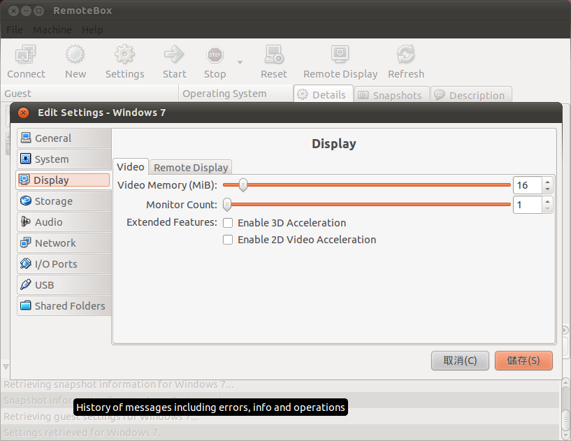
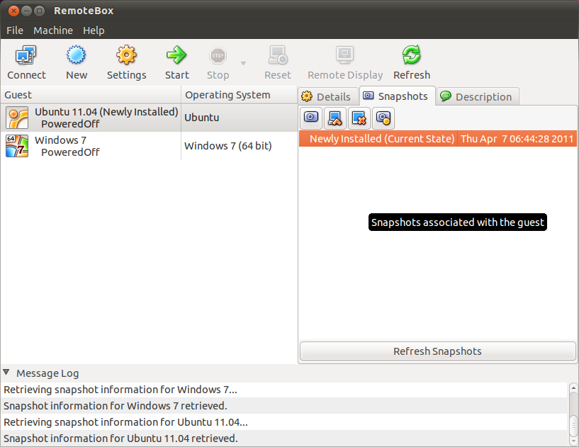

感謝您對「自由軟體鑄造場」的支持與愛護，十多年來「自由軟體鑄造場」受中央研究院支持，並在資訊科學研究所以及資訊科技創新研究中心執行，現已完成階段性的任務。 本網站預計持續維運至 2021年底，網站內容基本上不會再更動。
也紀念我們永遠的朋友 李士傑先生（Shih-Chieh Ilya Li）。
也紀念我們永遠的朋友 李士傑先生（Shih-Chieh Ilya Li）。
源碼秘技  遠端管理 VirtualBox 的神兵利器－RemoteBox
遠端管理 VirtualBox 的神兵利器－RemoteBox
遠端管理 VirtualBox 的神兵利器－RemoteBox
建立日期 2011-05-02 16:13 最近更新在 2011-05-11 11:38
前言
許多人因為工作或興趣的關係，經常需要測試各種作業系統。例如驗證應用程式在不同版本的 Windows 系統下是否會產生事先未預期到的問題，或是測試最新版本的 Linux 發行版本，並了解其最新技術與功能表現等等。以往要進行類似的測試，多半需要同時準備數部電腦主機，並在每一部主機上安裝待測試的作業系統平台，才能開始進行測試。但這樣的測試方式十分費時費力，相關硬體的建置成本支出也會是相當沉重的負擔。但在硬體效能持續進步的今天，要安裝各種不同的作業系統，已經不再需要實際購買與建置真正的硬體設備。因為只要安裝虛擬機器軟體，即可在現有的作業系統平台上建立虛擬機器，並利用此虛擬機器進行任何測試。由於虛擬機器的運作狀態與真實主機相去不遠，因此可以相當真實的呈現軟體在各種不同作業系統平台上的實際表現。
目前在虛擬機器軟體方面已經有非常多的選擇，例如知名的商業軟體 VMware，或是原先是商業軟體、但在 Microsoft 買下原開發公司後成為免費軟體的 Virtual PC，都有許多愛用者。Linux 系統上的 Xen、KVM (Kernel-based Virtual Machine) 也有相當數量的支持者，而且成熟度也越來越高。除了這些選擇以外，目前由 Oracle 公司進行開發，採用開放原始碼方式授權的 VirtualBox，也是許多人選擇虛擬機器軟體的首選之一。除了開放式原始碼的授權模式相當吸引人之外，VirtualBox 本身支援多種不同的作業系統平台（無論是 Host OS 或是 Guest OS 皆然），並且提供圖形化的操作介面，也是許多人採用 VirtualBox 的理由之一。
VirtualBox 本身所提供的管理介面非常方便，無論是建立新的虛擬機器，或是設定虛擬機器之中的各種硬體設備，都能使用此介面進行處理。雖然 VirtualBox 的管理介面已經足以應付大部份的使用需求，但較為可惜的是本身並未提供遠端管理虛擬機器的功能。也就是說，只要虛擬機器一關機，除非使用者回到安裝 VirtualBox 的主機前面並直接進行操作，否則將無法針對虛擬機器之中的資料進行任何處理。只是這樣的問題今後將不復存在，因為取名為 RemoteBox 的工具程式，正是解決相關問題的最佳幫手。
官方網站：https://remotebox.knobgoblin.org.uk/
下載網址：https://remotebox.knobgoblin.org.uk/downloads/RemoteBox-0.8.tar.bz2 (587KB)

▲ 圖1 RemoteBox 的主畫面。
RemoteBox 簡介
RemoteBox 這一套圖形化的管理工具，可以遠端管理其他主機 (Host) 所執行的 VirtualBox 程式，且無論是 VirtualBox 本身的設定，或是利用 VirtualBox 所安裝的 Guest，都能直接進行處理。此處所謂的其他 Host 主機，可以是遠端主機（被連結主機與執行 RemoteBox 的電腦並非同一部），也可以是本地主機（RemoteBox 執行的電腦與欲連接的目的端電腦，都是同一部機器）。前者的應用方式適合在臨時需要處理虛擬機器的相關操作，但暫時無法實際接觸遠端主機並進行管理的情況下使用。例如在網路上或家中建置了一部伺服器，並且在該部主機中執行了 VirtualBox。如果希望從公司的電腦連接此部主機並執行 VirtualBox 的相關操作，即可利用 RemoteBox 進行處理。至於後者，則可以將 RemoteBox 視為是 VirtualBox 的另一種替代的管理介面使用。也就是說，RemoteBox 的出現，是為了提供 VirtualBox 使用者一套新的圖形管理介面，並且可以利用這套管理介面進行遠端主機的管理工作。由於 RemoteBox 同時可以進行 VirtualBox 的設定變更與虛擬機器本身的操作功能，因此在使用 RemoteBox 時，其操作與實際在遠端主機前面進行作業並無太大差別。如果網路速度夠快，甚至不會感覺到有任何差異，如同 VirtualBox 是安裝在本地一般。
由於 RemoteBox 在使用時可以將虛擬機器的所有執行結果顯示在本地端，因此無論要連接的遠端主機與其虛擬機器是否有連接顯示器，都不會影響 RemoteBox 的正常操作。這是因為 RemoteBox 本身支援遠端桌面協定 (Remote Desktop Protocol, RDP)，因此可以在本地端直接看到遠端虛擬機器的操作畫面，並且透過此通訊協定與虛擬機器進行互動，包括滑鼠與鍵盤等輸入裝置都能直接使用。如果有其必要性，甚至也能利用 RDP 直接播放遠端虛擬機器所產生的音效。輸入輸出都能利用 RemoteBox 進行，自然不必要求遠端的虛擬機器必須安裝螢幕或其他裝置。此外，RemoteBox 使用的技術為 VirtualBox 本身所提供的 API 函式與 SOAP 介面為主，而這些技術只要啟用 VirtualBox 的網頁服務功能即可開始使用。

▲ 圖2 RemoteBox 亦可透過遠端桌面功能查看虛擬機器的畫面。
RemoteBox 的主要功能與特色
由於 VirtualBox 本身可以在數種不同的作業系統上執行，例如 Linux、Windows、Mac OS X 或 Solaris 等等，因此在使用 RemoteBox 時，可能會面臨欲進行連接的遠端主機其作業系統彼此互異，或是與本地主機並不相同的情況。但由於 RemoteBox 採用的是網路通訊協定，且這些通訊協定本身都是 VirtualBox 直接支援的協定，所以只要遠端主機可以安裝 VirtualBox，便能使用 RemoteBox 進行連接與處理相關的管理動作，並不會因為遠端主機所使用的作業系統有所不同而產生任何問題。但截至目前為止，RemoteBox 本身則只能在 Linux、BSD 或 Mac OS X 等作業系統上執行，尚未支援 Windows 系統。這是因為 RemoteBox 的開發團隊認為 Windows 平台上並沒有合適的 Perl 直譯器可以使用，因此暫時沒有將 RemoteBox 移植到 Windows 系統的計畫。
也因為 RemoteBox 強調本身是一套採用開放原始碼的 VirtualBox 圖形化遠端管理介面，因此在執行 RemoteBox 時一定要擁有圖形化的桌面環境。RemoteBox 主要支援的桌面環境為 GNOME，而 GNOME 目前也是大多數 Linux 發行版本的預設桌面環境，在使用上不至於產生太大的問題。但如果使用者慣用的桌面環境是 KDE 或其他桌面環境，則可能需要安裝 GTK 相關的套件才能順利執行 RemoteBox。

▲ 圖3 RemoteBox 亦可用來新增 VirtualBox 中的虛擬機器。
雖然 RemoteBox 使用的是 VirtualBox 所提供的網頁服務，且 RemoteBox 與 VirtualBox 進行溝通時採用的也是 HTTP 協定，但使用者不需要事先在執行 VirtualBox 的主機上啟用任何網頁伺服器，也不需要使用瀏覽器進行操作。因為 RemoteBox 只是單純使用 HTTP 協定進行通訊，並未使用任何網頁技術，所以只要啟用 VirtualBox 本身的網頁服務功能即可，並不需要同時執行像 Apache 之類的網頁伺服器。如果有人嘗試使用網頁瀏覽器連接 VirtualBox 的網頁服務，也只會得到一些錯誤訊息而已，無法取得任何有效的資訊。除此之外，由於 RemoteBox 本身是以 Perl 撰寫而成，因此在使用 RemoteBox 之前並不需要進行編譯動作，直接執行程式即可。唯一可能產生問題的地方，在於每一部主機的 Perl 執行檔可能位於不同的目錄之下。如果有此類問題，只需要修改 RemoteBox 的描述檔，並修改 Perl 的路徑即可。
RemoteBox 連接上遠端的 VirtualBox 之後，會先顯示本身的主畫面。此畫面的排列方式與實際功能都與 VirtualBox 相去不遠，因此也可以利用此畫面進行 VirtualBox 的設定功能。這些設定功能包含修改 VirtualBox 本身的設定，或是變更虛擬機器的相關設定等等。例如加入光碟或儲存媒體至 VirtualBox 的媒體庫之中，或是直接建立一個新的虛擬機器、修改現有的虛擬機器等功能，都能透過 RemoteBox 的操作畫面完成。而無論處理的是虛擬機器的新增或修改功能，都能直接設定虛擬機器的細部設定。例如指定處理器的數量與核心數量、顯示器相關的參數、輸入裝置、音效、I/O 埠或是共享目錄等，都能以遠端作業的方式加以完成。此外，也因為 RemoteBox 採用的是網路協定與 VirtualBox 進行溝通，因此遠端主機是否有安裝螢幕並不是 RemoteBox 考量的重點。即使 VirtualBox 是以無顯示器的方式進行運作，RemoteBox 一樣可以加以支援，而不需要進行任何額外的設定，或使用其他特殊的設備。

▲ 圖4 管理虛擬機器的設定值亦是 RemoteBox 的功能之一。
或許有人會擔心，RemoteBox 本身所支援的遠端管理功能是否只支援開機前的設定與開機後的操作功能。事實上因為 VirtualBox 會將所有訊息全數傳回至 RemoteBox，因此只要是在本地端實際操作 VirtualBox 所能處理的工作，RemoteBox 也幾乎可以全數進行處理。例如啟動尚未開機的虛擬機器，或是將目前正在執行中的虛擬機器直接關機等功能皆可透過 RemoteBox 進行處理。如果需要暫停虛擬機器的運作，或是儲存虛擬機器的狀態，也有 RemoteBox 發揮的空間。甚至在虛擬機器開機後，在正式進入作業系統畫面之前，也能使用 RemoteBox 進行 BIOS 的設定工作。如果需要使用或設定較為進階的選項，例如是否採用大量分頁技術、CPU 熱插拔等功能，亦可使用 RemoteBox 進行處理，不需要擔心會有無法進行操作的情況發生。如果需要將遠端主機 Host OS 上的 USB 裝置連接至 VirtualBox 所建立的虛擬機器之中，或是要建立新的磁碟裝置並連接至虛擬機器，這些工作也都能直接透過 RemoteBox 加以完成。至於在網路設定方面，RemoteBox 也可以直接支援 VirtualBox 所提供的各種網路設定。無論虛擬機器要使用的是橋接式或 NAT 方式的網路，或是建立一個本地網路，其成員只有虛擬機器與其 Host OS，都不會有任何問題產生。
VirtualBox 另外也支援名為 Snapshot 的系統快照功能，可以將目前 Guest 的狀態儲存在 Host 的磁碟當中。如果將來 Guest 發生任何問題，只需要回溯先前所建立的快照，即可恢復整個系統的狀態至正常情況。這樣的快照功能是 VirtualBox 相當廣受好評的功能之一，RemoteBox 自然也不會忘記要支援這樣的功能。如果需要遠端進行虛擬機器的快照處理，只需要在 RemoteBox 的畫面上點選適當的按鍵，並輸入相關的資訊即可立即產生快照。

▲ 圖5 切換至右方視窗的【Snapshot】頁籤，即可進行快照功能的管理。
結語
虛擬機器軟體的流行，讓許多需要經常安裝各種不同作業系統的使用者有了更方便的測試環境建置選擇。由於省時省力，在金錢花費上甚至可以達到零支出，自然吸引許多人的目光。VirtualBox 在各方面都提供了不次於其他虛擬機器軟體的功能，如果再加上 RemoteBox 的輔助，相信將會有如虎添翼的感受。目前 RemoteBox 可以執行的作業系統平台仍然不如 VirtualBox 的多元化，相信這也會是 RemoteBox 將來改版的重點項目之一。
作者簡介
翁卓立，逢甲大學資訊工程學系、台灣科技大學電子所畢業，目前擔任韌體研發工作，主要使用 Embedded Linux 進行產品開發。著有「Linux 進化特區：Ubuntu 10.04 從入門到精通」等書。
專欄總覽


自由軟體鑄造場 製作 最佳瀏覽狀態：IE7或Firefox2.0以上 (建議使用Firefox) ‧ 解析度1024*768
E-Mail：contact@openfoundry.org Address：台北市南港區研究院路2段128號 中央研究院資訊科學研究所 . 隱私權條款. 使用條款
E-Mail：contact@openfoundry.org Address：台北市南港區研究院路2段128號 中央研究院資訊科學研究所 . 隱私權條款. 使用條款